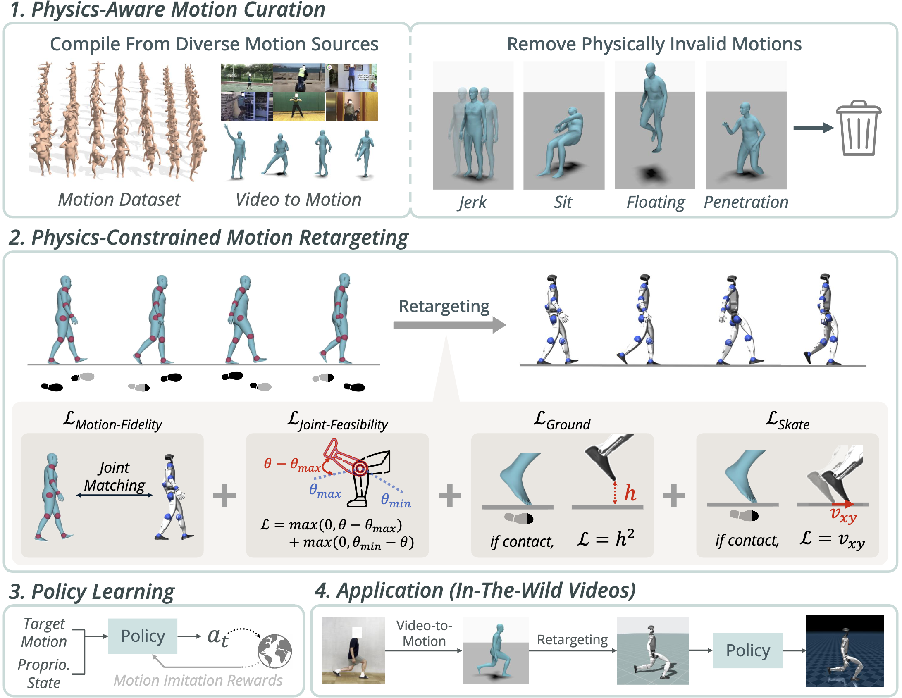
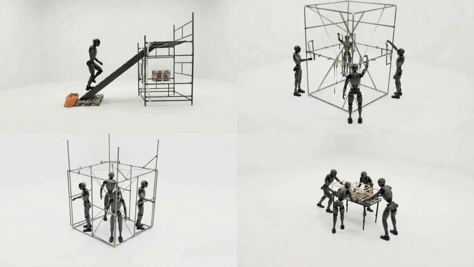
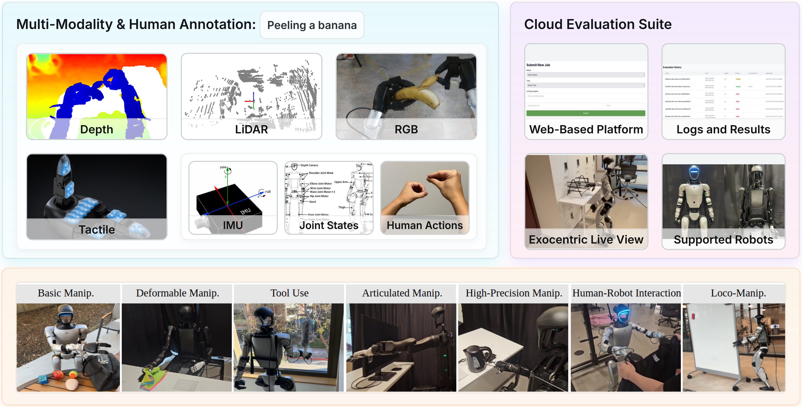
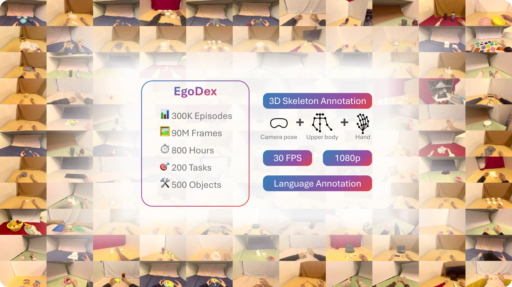
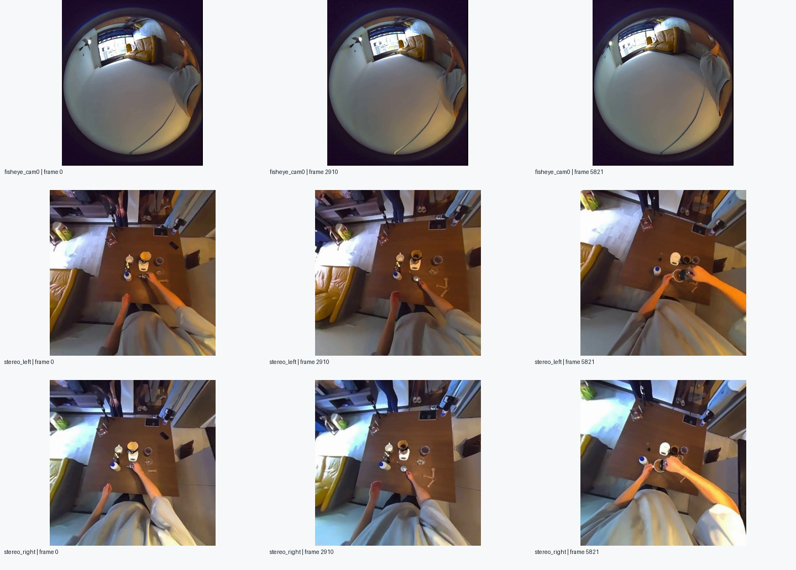

数据集规模、格式与本批样本
| 数据集 | 原数据集规模 | 数据版本 | 数据格式 | 本批记录数 | 本批帧数 |
|---|---|---|---|---|---|
| PHUMA | 论文全量：约 7.6 万段动作 · 73 小时HF 发布版未含 LAFAN1 / LocoMuJoCo | G1 / H1-2 轨迹 | NPY（ZIP 打包） | 48 | 4,720 |
| BONES-SEED | 142,220 段动作 · 约 288 小时含镜像；3 种表示不重复计数 | G1 机器人 | CSV | 24 | 28,415 |
| SOMA 人体 · 原始比例 | BVH + NPZ | 24 | 20,901 | ||
| SOMA 人体 · 统一比例 | BVH + NPZ | 24 | 17,245 | ||
| Humanoid Everyday | 论文：约 1.03 万段轨迹 · 260 类任务HF 版：8,949 段 · 3,436,171 帧 | 真机操作记录 | LeRobot：Parquet + MP4；元数据 JSON / JSONL；原始记录 JSON / PNG / PCD | 3 | 338 |
| EgoDex | 829 小时 · 194 类任务 | 手部操作记录 | MP4 + HDF5 | 8 | 4,957 |
| Xperience-10M | 官方公布：1,000 万次交互 · 1 万小时 | 多模态片段 | 6 路 MP4 + HDF5 | 4 | 6,683 |
拿到五套数据的小批样本，明确各自用途，确定先做 G1 全身动作验证。
5 套数据集已完成小批取样
PHUMA → BONES当前优先投入顺序
做了什么
- 梳理数据记录了什么、采用什么格式，以及获取和使用条件。
- 完成 PHUMA、BONES-SEED、Humanoid Everyday、EgoDex、Xperience-10M 的小批下载与样本检查。
- 整理对照报告和样本可视化，区分全身动作、人体骨架、真机操作与第一人称手部数据。
已有成果
形成五套数据的用途对照和取样报告：先用 PHUMA 建立全身跟踪基线，再用 BONES 扩展动作；其他三套用于操作、多模态对齐和缺失信息研究。
还需完善：目前是小样本摸底，取样存在偏差；还不能据此给完整数据集做质量排名。
五套数据：是什么、什么格式、怎么用
PHUMA
机器人全身轨迹把人体动捕与视频中的动作做物理筛选，再映射到 G1、H1-2。拿到的是机器人每一帧应处于什么姿态。
Pipeline · 原工作流程概览
- 原始人体动作动捕数据 / 视频提取
- 物理质量筛选筛除跳变、悬浮等问题
- PhySINK 重定向生成 G1 / H1-2 轨迹
- 策略学习与跟踪模仿训练、仿真 / 真机验证
原工作创新点
- 物理约束重定向：把关节与接触约束纳入人体到机器人的动作映射，减少脚滑、悬浮和穿透。
- 物理质量筛选：在重定向前筛除不合理动作，提高后续模仿学习的数据质量。
主要格式
- NPY
- 根部位置、旋转四元数、各关节角和帧率；本批样本为 30 Hz。
我们先做最先做 G1 动作跟踪与清洗前后对照，兼容 H1-2。

BONES-SEED
带标签的人体动作库光学动捕记录的走路、舞蹈、日常活动等全身动作，配有语言描述和时间分段；同时提供人体骨架与 G1 版本。
Pipeline · 原工作流程概览
- 光学动作采集Vicon 记录人体动作
- 动作表示转换SOMA 人体 / G1 机器人
- 整合语义标签动作描述、时间分段、属性
- 发布动作库BVH / CSV 与配套元数据
原工作创新点
- 语义化动捕动作库：把大量光学动捕动作与语言描述结合，支持按语义检索和生成动作。
- 细粒度时间分段：为动作片段提供时间边界和语义标签，便于学习长动作的组成与顺序。
- 多种动作表示：同时提供 SOMA 人体与 G1 轨迹，便于跨本体适配与复用。
主要格式
- CSV / BVH
- CSV 存 G1 根部姿态与 29 个关节；BVH 存 SOMA 骨架及动作。
- Parquet / JSONL
- 动作属性、语言描述与时间分段。动作约 120 Hz，需统一单位与坐标。
我们先做在 PHUMA 基线跑通后扩充动作；研究人体到 G1 的适配、动作检索和语言条件生成。

Humanoid Everyday
真实机器人操作记录人遥操作 G1 / H1 完成开柜门、拿物品、使用工具等任务时，记录机器人的视觉、状态和动作。
Pipeline · 原工作流程概览
- 人类遥操作头部与手部输入
- G1 / H1 执行机器人完成真实任务
- 多模态记录视觉、深度、触觉、状态 / 动作
- 任务整理与发布语言标签、片段、LeRobot 格式
原工作创新点
- 扩展真实任务覆盖：覆盖移动操作、工具使用和人机交互，拓宽人形机器人操作学习的场景。
- 多模态遥操作记录：同步采集视觉、深度、触觉、状态与动作，为感知到控制的联合学习提供数据。
主要格式
- Parquet + MP4
- 本批采用 LeRobot v2 格式：表格存状态、动作和时间戳，视频存 RGB；约 30 Hz。
- JSON / JSONL
- 任务与片段信息；数据还包含深度、点云、IMU 和触觉等字段。
我们先做做“看见什么 → 执行什么动作”的操作模仿学习，以及视觉与机器人状态对齐。

EgoDex
第一视角手部操作人佩戴 Apple Vision Pro 做折衣服、系鞋带等桌面任务。视频配有头部、上身、手腕和手指的三维姿态。
Pipeline · 原工作流程概览
- Vision Pro 采集第一视角操作视频
- 同步姿态估计ARKit 跟踪上身与手指
- 逐帧配对与标注视频、位姿、置信度、语言
- 数据发布与评测MP4 / HDF5、轨迹预测基准
原工作创新点
- 规模化视频与手姿配对：利用头显同步记录第一视角视频和三维手指姿态，覆盖多样的精细操作。
- 手部轨迹预测基准：提供模仿学习基线与评价指标，支持比较手部动作预测能力。
主要格式
- MP4 + HDF5
- 一段视频对应一个标注文件；30 Hz、1080p。HDF5 存逐帧 4×4 位姿矩阵、置信度、相机内参与语言。
我们先做做手部轨迹预测、操作理解和低置信度信息处理；没有完整下肢参考，不直接作为 G1 行走轨迹。

Xperience-10M
第一视角多模态记录同步记录人做事时多台相机看到的画面，以及深度、身体和手部动作、IMU 与文字描述。图中为公开的手冲咖啡样例。
Pipeline · 原工作流程概览
- 多传感器采集多相机视频 / 音频、IMU
- 几何与运动标注深度、位姿、全身 / 手部
- 时间与语义整合设备时间戳、分层语言
- 按片段打包多路 MP4 + annotation.hdf5
原工作创新点
- 多模态时空同步：统一多视角视频、深度、相机位姿、全身 / 手部动作与 IMU，连接场景几何和人体行为。
- 分层语言标注：用任务、子任务、动作与交互等层级描述连续过程，支持动作和任务语义的联合研究。
主要格式
- 多路 MP4 + HDF5
- 完整片段通常为 4 路鱼眼和左右双目视频，配 annotation.hdf5。
- HDF5 内部
- 深度、相机位姿、52 个身体关键点、每手 21 个关键点、IMU 与分层文字；实际有效字段需逐段检查。
我们先做做多传感器时间对齐、信息缺失与补全、手和物体的交互理解；转成 G1 控制参考还需适配。
